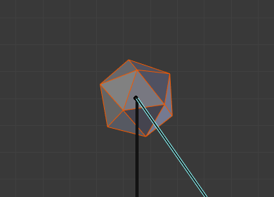
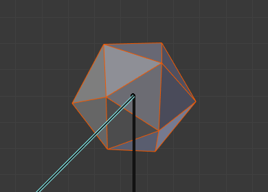
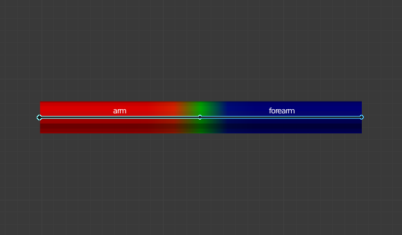

骨架修改器¶
The Armature Modifier is used for building skeletal systems for animating the poses of characters and anything else which needs to be posed.
By adding an armature system to an object, that object can be deformed accurately so that geometry does not have to be animated by hand.
See also
For more details on armatures usage, see the armature section.
选项¶
Armature Modifier.
- 物体
- 使用该修改器的骨架物体的名字
- 维持体积
在形变过程中使用四元数来维持物体的体积。很多情况下使用会有较好的效果。
Without Preserve Volume, rotations at joints tend to scale down the neighboring geometry, up to nearly zero at 180 degrees from rest position. With Preserve Volume, the geometry is no longer scaled down, but there is a "gap", a discontinuity when reaching 180 degrees from rest position.

Initial state. |

100° rotation, Preserve Volume disabled. |

180° rotation, Preserve Volume disabled. |

100° rotation, Preserve Volume enabled. |

179.9° rotation, Preserve Volume enabled. |

180.1° rotation, Preserve Volume enabled. |
{kind=link}
{kind=link}
- 顶点组
The name of a vertex group of the object, the weights of which will be used to determine the influence of this Armature Modifier's result when mixing it with the results from other Armature ones.
在同一个物体上，多项修改器（Multi Modifier）已启用，并且使用至少两个这样的修改器才有意义。
- 反转
- 反转上面设置中顶点组影响力（例如，反转该组的权重）。
绑定到¶
Methods to bind the armature to the mesh.
- 顶点组
Meshes and lattices only -- When enabled, bones of a given name will deform vertices which belong to vertex groups of the same name. e.g. a bone named "forearm" , will only affect the vertices in the "forearm" vertex group.
The influence of one bone on a given vertex is controlled by the weight of this vertex in the relevant group. A much more precise method than Bone Envelopes, but also generally longer to set up.
- 骨骼封套
- When enabled, bones will deform vertices or control points near them, defined by each bones envelope radius and distance. Enable/Disable bone envelopes defining the deformation (i.e. bones deform vertices in their neighborhood).

The weights of the arm vertex group. |

The weights of the forearm vertex group. |

The result when posing the armature. |

The same pose, but using envelopes method rather that vertex groups. |
{kind=link}
多重修改器¶
Use the same data as a previous modifier (usually also an Armature Modifier) as input. This allows you to use several armatures to deform the same object, all based on the "non-deformed" data (i.e. this avoids having the second Armature Modifier deform the result of the first one...).
The results of the Armature Modifiers are then mixed together, using the weights of the Vertex Group as "mixing guides".
Tip
Armature Modifiers can quickly be added to objects using the parenting shortcut
Ctrl-P when the active object is an armature.